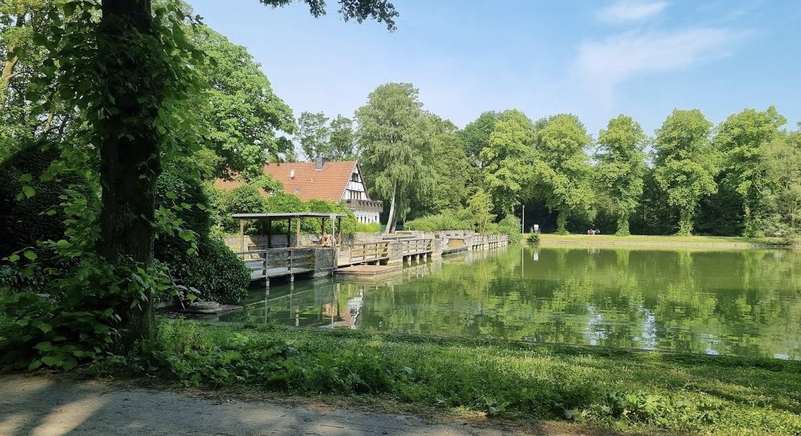
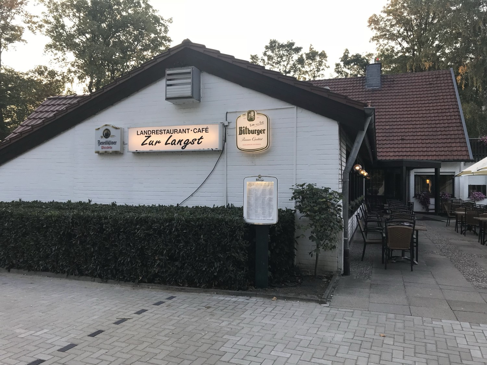
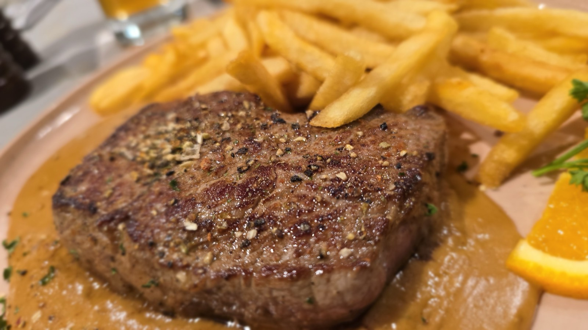

Die Platten für zwei
So reichlich, dass ein Kind mitisst. Medaillons mit Kräuterbutter, dazu Gemüse, Kroketten und Pommes.
4,6 · 705 Bewertungen
02382 8551018



Mittags
Landrestaurant und Café direkt am Langst-Teich im Ahlener Stadtwald. Terrasse über dem Wasser, Küche vom Rost, Salatbuffet dazu.
Aus der Küche
Der Grill ist das Herz des Hauses: große Platten für zwei, Balkan-Spezialitäten und Steaks. Zum Hauptgang gehört das Salatbuffet.
So reichlich, dass ein Kind mitisst. Medaillons mit Kräuterbutter, dazu Gemüse, Kroketten und Pommes.

Ćevapčići, Bauchspeck, Schnitzel, dazu Djuvec-Reis und Ajvar. Die Küche, für die viele herkommen.

Auf den Punkt gegart, mit hausgemachten Soßen.
Salatbuffet inklusive: rund zehn Zutaten, drei Dressings, so oft Sie möchten. Die vollständige Karte mit Preisen gibt es vor Ort oder am Telefon.
„Sehr gute Steaks gegessen. Auf den Punkt gegart. Sehr leckere Soßen.“
Draußen sitzen
Überdacht und windgeschützt, mit Blick über das Wasser. An sonnigen Tagen gibt es genug Schattenplätze — und wenn das Wetter kippt, sitzen Sie trotzdem trocken.
„Die Terrasse bietet auch an sonnigen Tagen genügend Schattenplätze mit tollem Ausblick.“
Nicht behauptet, nachgezählt
0
Bewertungen bei Google, im Schnitt 4,6 von 5. Das schreiben Gäste am häufigsten:
Gut zu wissen
| Montag | 11:30 – 22:00 |
|---|---|
| Dienstag | Ruhetag |
| Mittwoch | 11:30 – 22:00 |
| Donnerstag | 11:30 – 22:00 |
| Freitag | 11:30 – 22:00 |
| Samstag | 11:30 – 22:00 |
| Sonntag | 11:30 – 21:00 |
Herkommen